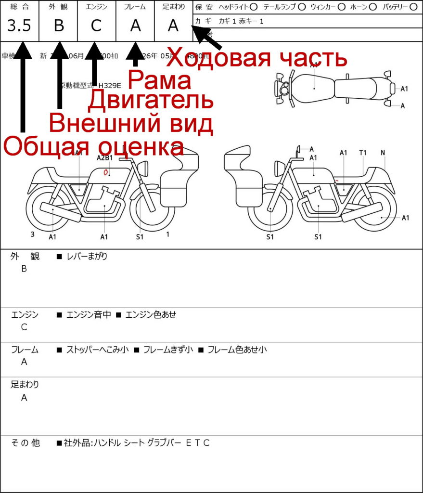
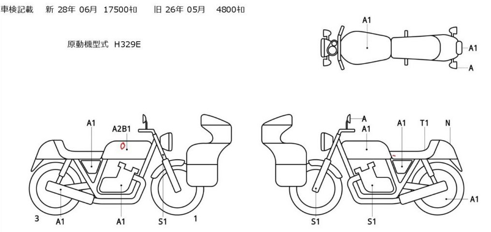
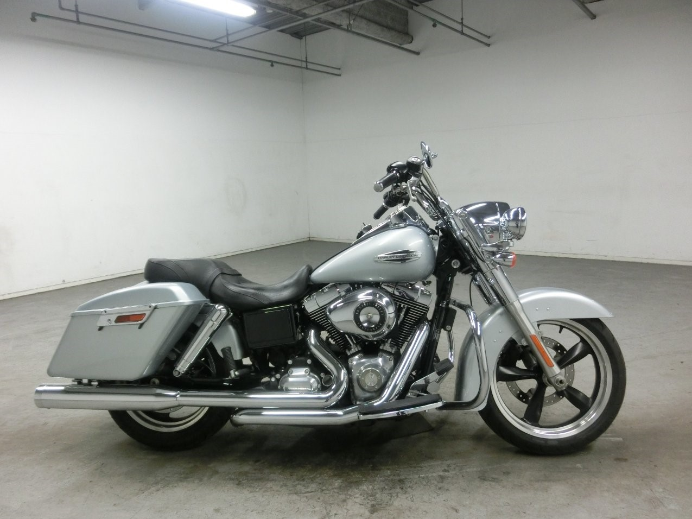
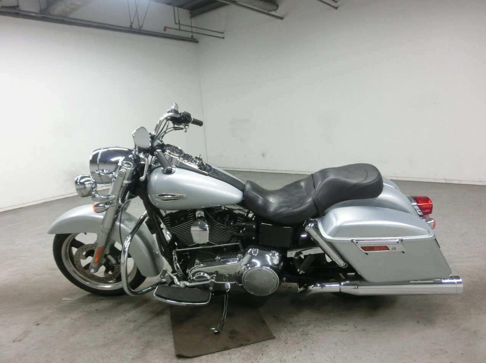
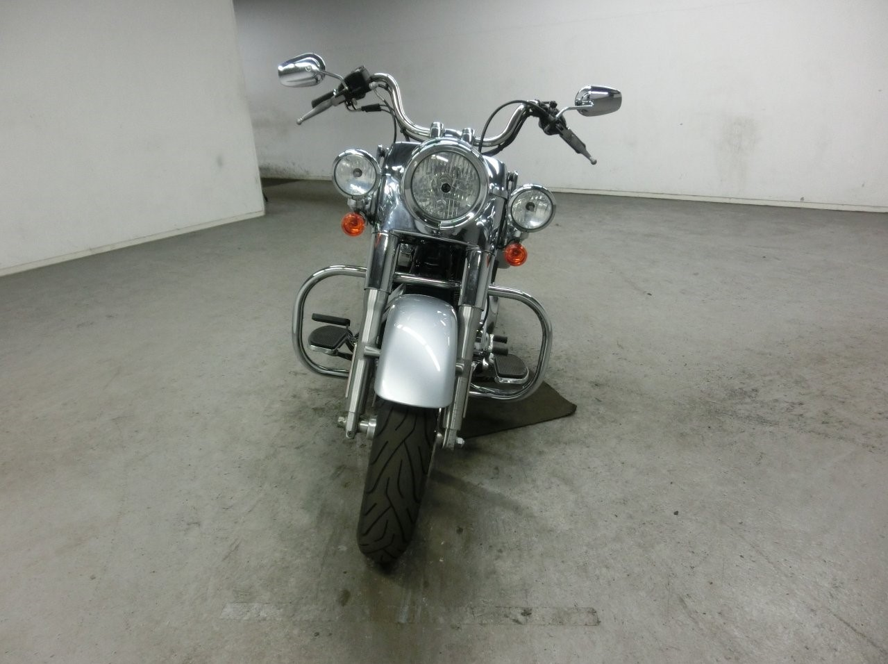
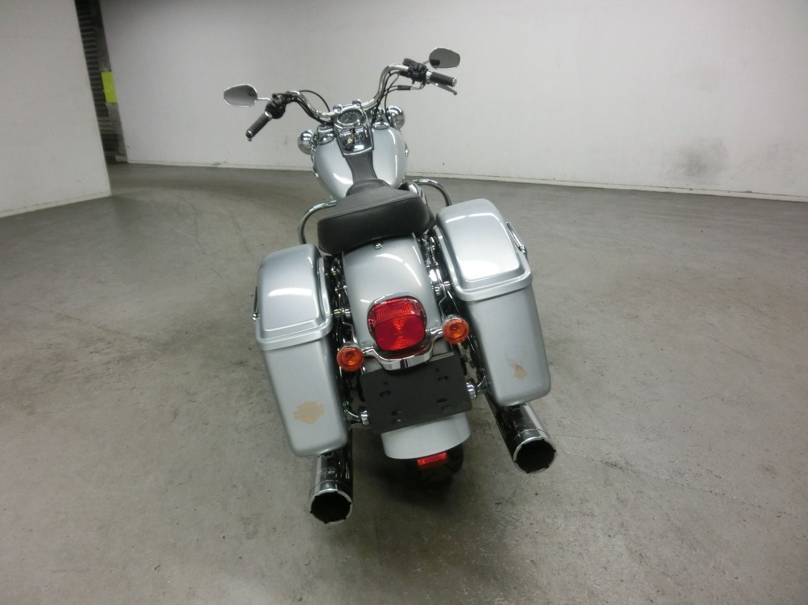
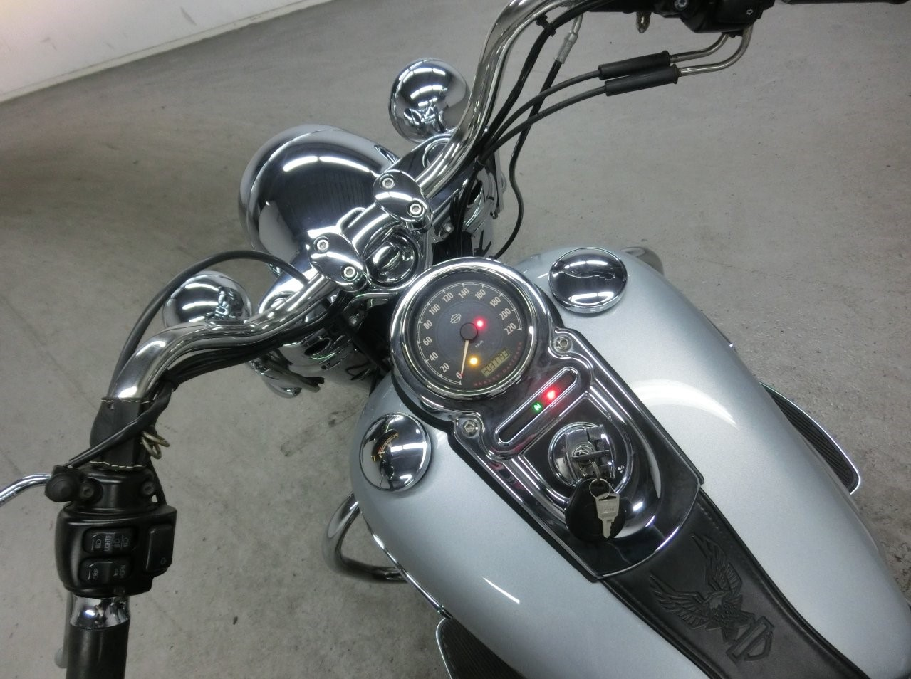
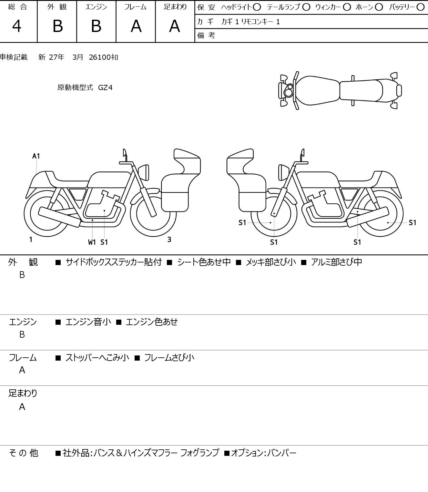
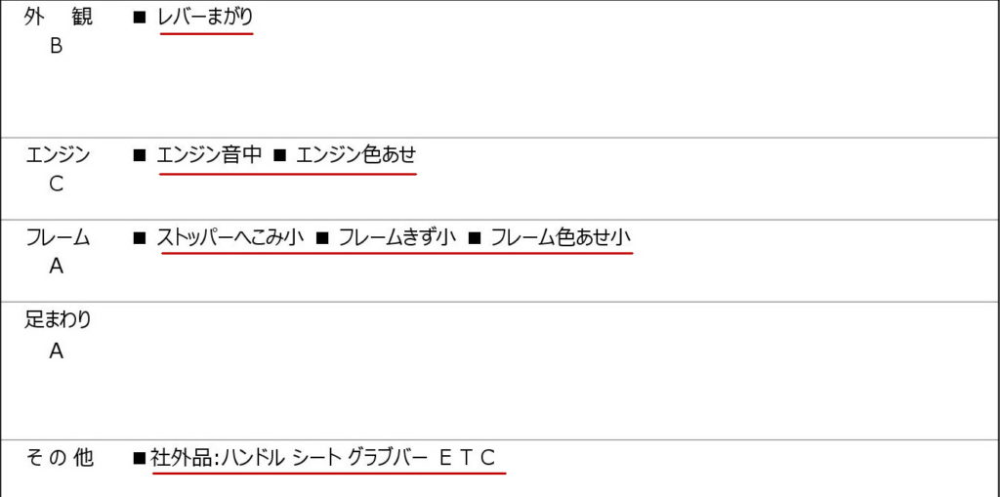

Аукционы и система оценок
Мотоаукционы BDS и JBA
Мы работаем с двумя крупнейшими мотоаукционами Японии — JBA и BDS.
На BDS торги проходят по средам и пятницам, а на JBA — по вторникам и пятницам. Суммарно в неделю
продаётся более 10 000 мотоциклов, скутеров, трайков и вообще всего, что имеет
отношение к мототехнике. Чтобы эффективно продать такое количество техники, торги проходят сразу по
нескольким линиям, а ставки на каждый лот принимаются в течение максимум 1
минуты.
Перед тем как попасть в список лотов, каждый мотоцикл проходит проверку эксперта от аукционной площадки
и получает оценки за каждый свой узел. Оценщику совершенно не интересно,
продастся байк или нет — у него нет никакой выгоды от завышения оценок или сокрытия недостатков. Поэтому
оценки получаются максимально точными и честными. На BDS и JBA процесс
оценки и предлагаемые покупателям данные несколько отличаются.
За основу для обеих систем можно принять следующее соответствие:
- S (6-10) — идеально
- А (5) — отлично
- B (4) — очень хорошо
- С (3) — удовлетворительно
- D (2) — плохо
- R (1) — очень плохо
Система оценок JBA
Мотоцикл фотографируется с 5 ракурсов, эксперт заполняет лист диагностики и выставляет общую оценку, а
также оценки по 4 главным узлам — двигатель, внешний вид, ходовая часть,
рама.

Общая оценка выставляется в виде буквы или цифры и соответствует самой низкой оценке по узлам (например,
двигатель А, рама А, ходовая А, внешний вид С — общая оценка будет лишь 3).
Что означают оценки?
- S — новый мотоцикл
- 6 — идеальное состояние
- 5 — отличное состояние
- 4.5 — очень хорошее состояние
- 4 — хорошее состояние
- 3.5 — приемлемое состояние
- 3 — удовлетворительное состояние
- 2 — плохое состояние
- 1 — очень плохое состояние
- R — битые или аварийные мотоциклы
Далее эксперт расставляет на схеме мотоцикла специальные отметки в виде индекса. Буква означает тип
повреждения, а цифра — его степень. Например, S2 на колесе — коррозия, средняя
степень:

- A — царапина
- B — вмятина
- H — дырка
- N — отсутствие
- P — перекраска, подкраска
- R — ремонтM
- S — коррозия, ржавчина, окисление
- T — поломано, обрезано
- X — необходима замена
- W — следы восстановления
- 1 – небольшой дефект или повреждение
- 2 – среднее повреждение, видимое, но не столь существенное
- 3 – сильное повреждение.
Кроме того, к каждому узлу эксперт дописывает текстовые комментарии, которые мы переводим с японского,
чтобы получить полную информацию о каждом байке.
Система оценок BDS
На торгах BDS мотоциклы получают более пристальное внимание. Оценки выставляются по 6 параметрам —
внешний вид, двигатель, рама, задняя часть, передняя часть, электрика. Каждый
дефект также описывается текстовым комментарием.
Каждый байк фотографируют с 30 ракурсов — 6 общих фотографий и по 4 детальных фото на каждый узел
оценки. Кроме того, покупателям предлагаются два видео, снятые с двух ракурсов.
На видео эксперт-оценщик проверяет мотоцикл по схеме «запуск, поворотники, фара, стоп-сигнал, сцепление,
прогазовка, стоп». Общая оценка выводится по среднему показателю. Все
оценки выставляются по 10-балльной системе.
При 10-балльной шкале BDS все оценки, что равны или выше 5 имеют очень слабую градацию. 6-10 баллов
ставят только почти новым мотоциклам с самым минимальным пробегом. При этом 9
вместо 10 могут поставить из-за надорванной заводской упаковки или отсутствия плёнки на спидометре.
Часто можно видеть среди лотов мотоциклы в заводской плёнке с пробегом 0 км с
оценками 8 баллов сразу по нескольким узлам. Проще говоря, всё что выше 5 баллов имеет состояние близкое
к новому мотоциклу.
Пример оценки
- SUZUKI INTRUDER M1800R
- Год выпуска 2011
- Пробег 3 507 км
- Общая оценка 5
- Двигатель 5
- Передняя часть 6
- Внешний вид 6
- Задняя часть 5
- Электроника и навесное 5
- Рама 5
- 
- 
- 
- 
- 
- 
- 
Важно знать
Обратите внимание на особенности аукционной оценки:
-
Для всех мотоциклов указывается год первой регистрации, а не год выпуска. Год выпуска может
оказаться старше.
-
Для мотоциклов с объёмом двигателя менее 400сс год не указывается. Для таких байков мы определяем
год по номеру рамы.
-
В Японии пробег сверяют на каждом техосмотре и заносят в базу. Если пробег не совпадает с базой, был
изменен или приборка подверглась замене — об этом обязательно будет
стоять специальная отметка.
-
Оценки снижают за любые изменения конструкции, даже самые незначительные. Замена зеркал,
поворотников, обивки сиденья или грипсов — оценка сразу же идёт вниз. Установлен
прямоток или приборка заменена на тюнинговую — 5-ки байку уже не видать.
-
Система оценок на JBA считается чуть более строгой. Поэтому нельзя говорить, что В на JBA всегда
равняется 4 на BDS. В целом, этот факт не должен волновать, ведь подробные
фото и видео говорят больше, чем сухие цифры диагностики.